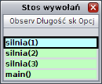
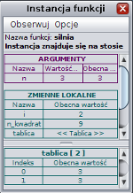
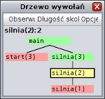

Stos wywołań i rekord aktywacji
W poprzedniej części pokazaliśmy podstawowy przykład rekurencji – funkcję silnia.
W tej części zapoznamy się z tym jak realizacja rekurencji jest wykonywana w pamięci komputera.

Analizując funkcję silnia pewnie zauważyłeś, iż program wywołując funkcję zatrzymywał się,
a w opisie programu wyświetlił się napis: „Połóż na stosie: silnia(10)”.
W tym momencie zapisują się informacje o nowej funkcji. Miejsce pamięci,
w którym te informacje są zapisywane, nazwane jest stosem wywołań. Zauważ,
że komputer może wykonywać na raz tyko jedną funkcję i wykonuje tylko tą,
która jest na szczycie (na wierzchu) stosu. W systemie rekurencja stos jest wizualizowany
w specjalnym oknie, którego obrazek widnieje po lewej stronie.

W momencie wywoływania funkcji, na stosie zapamiętywane są wszystkie parametry wywołania,
a także zmienne lokalne (łącznie z lokalnymi tablicami) nowej funkcji.
Struktura, która jest zapamiętywana na stosie, nazywa się rekordem aktywacji.
W systemie rekurencja argumenty i zmienne lokalne poszczególnych wywołań funkcji (instancji funkcji)
można zobaczyć w specjalnym oknie „instancja funkcji”, którego obraz wyświetlony jest po lewej stronie.
Kluczowy jest też moment zakończenia funkcji. Wówczas ze szczytu stosu usuwany
jest rekord aktywacji bieżącej funkcji, a następnie jest wykonywana funkcja,
której rekord znajdował się tuż pod spodem wierzchu stosu. Oczywiście komputer musi wiedzieć
do której linijki kodu ma powrócić po zakończeniu wywoływania funkcji,
dlatego w rekordzie aktywacji zapisywane jest także miejsce powrotu.

Wyżej powiedzieliśmy, że w momencie zakończenia funkcji ze stosu usuwany
jest rekord aktywacji bieżącej funkcji. Zazwyczaj w pamięci komputera
taki rekord aktywacji jest kasowany i nie ma śladu, że taka funkcja została wywołana.
Jednak w systemie rekurencja usuwamy rekord aktywacji jedynie ze stosu.
Nie kasujemy go, w ten sposób możemy dokładnie prześledzić historię wywołań
poszczególnych funkcji. W specjalnym oknie, zwanym drzewie wywołań funkcji,
możemy przejrzeć, jakie funkcje zostały wywołane.
Obraz tego okna został wyświetlony po lewej stronie.
W tej części funkcja silnia została odrobinę zmodyfikowana,
zostało dodanych kilka (niepotrzebnych) zmiennych lokalnych.
Uruchom funkcję silnia krok po kroku, a następnie gdy na stosie będzie już parę instancji,
kliknij prawym przyciskiem w niektóre z nich. Wówczas w oknie instancji funkcji
zostanie wyświetlona informacja o danej instancji. Zobacz, że zmienne lokalne,
a także tablice lokalne się od siebie różnią. Kiedy to zrobisz, przejdź do kolejnej części lekcji.